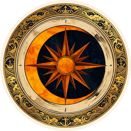

Cross-linked, searchable, spoiler-aware. A fan-built companion to One Piece.
🔗 Built on the One Piece Wiki's twenty years of work, with thanks.
Updated weekly from the One Piece Wiki — new chapters typically land 1–3 days after their wiki page appears.
Every fact in the Codex carries one of five trust tiers, so you always know how sure we are.
A fun project, not a definitive anything. The tiers are my best read of the source — not a verdict. Spot a wrong call? Open an issue — I'll fix it. Beginner's mindset, always improving.
Visualize where every character appears across the entire series. Click a character to highlight every chapter they're in — full appearance, flashback, silhouette, or cover story.
Every "Question Corner" entry from every volume Oda has ever published, searchable and categorized. Filter by Devil Fruits, characters, worldbuilding, or just Oda being Oda.
Every character cross-linked to their crew, devil fruit, weapons, family, birthplace, and voice actors. Every fact carries a tier badge from Oda's pen to your screen.
Browse Reddit's top fan theories — but every one has been weighed against actual canon. Each verdict cites Oda's own SBS quotes when relevant. No more taking strangers at their word.
Every arc from East Blue through Egghead — chapter ranges, saga grouping, and set-in location links.
Build theories with cited evidence. Pin Fact Cards, set stance, submit to the Codex.
Type any claim. Returns CONFIRMED · LIKELY · CONTRADICTED · UNKNOWN with citation chain.
Every named fruit — Paramecia, Logia, Zoan, Mythical, Ancient. Type-coded with debut chapter.
Every canonically-confirmed Devil Fruit awakening in chronological order. Type-coded with status.
Every Marine bounty pinned to a corkboard. Sortable by amount or by chronology of debut.
Named canon ships — Going Merry, Sunny, Moby Dick, Queen Mama Chanter, and the rest of the fleet.
Every pirate crew, marine unit, revolutionary cell, and faction with full membership rosters.
Major canonical islands, kingdoms, and territories — region-coded by sea.
Hand-curated bloodlines and adoptive families. Each edge cites its confirming chapter.
Stack 2-6 characters side-by-side. Quick-pick the Strawhats, Yonko, Admirals, or D-Clan.
The mini-arcs Oda runs on chapter title pages. Often canon, often foreshadowing.
Q&As organised by subject — characters, fruits, world, ages, jokes, behind-the-scenes.
Every chapter as a coloured cell — brighter means more canon-verified facts attached.
30 years of One Piece on a single calendar — every manga chapter, anime episode, film, and milestone mapped by week.
Every JP and EN voice actor. Multi-role workhorses tagged — some VAs play 40+ characters.